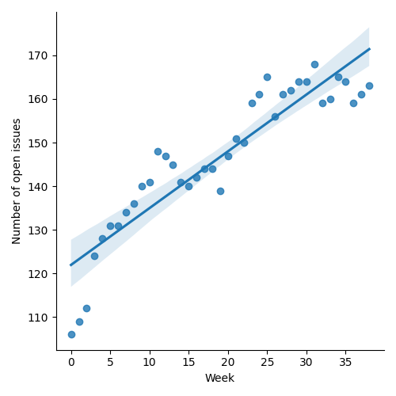
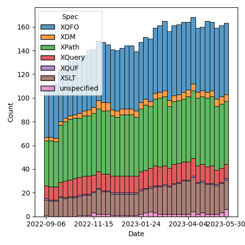
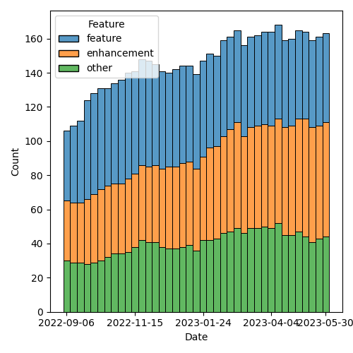

QT4 CG Meeting 037 Minutes 2023-05-30
Table of Contents
- Draft Minutes
- Summary of new and continuing actions
[0/12] - 1. Administrivia
- 2. Technical Agenda
- 2.1. PR #521: 518: Add transitive-closure() function
- 2.2. PR #512: 256: Context for default function parameter expressions
- 2.3. PR #529: 528: revision of json(), and renaming to xdm-to-json()
- 2.4. PR #368: 129: Context item generalized to context value
- 2.5. PR #533 Spec for CSV parsing with fn:parse-csv()
- 3. Any other business?
- 4. Adjourned
Draft Minutes
Summary of new and continuing actions [0/12]
[ ]QT4CG-002-10: BTW to coordinate some ideas about improving diversity in the group[ ]QT4CG-016-08: RD to clarify how namespace comparisons are performed.[ ]QT4CG-026-01: MK to write a summary paper that outlines the decisions we need to make on “value sequences”- This is related to PR #368: Issue 129 - Context item generalized to context value and subsequent discussion.
[ ]QT4CG-029-01: RD+DN to draft spec prose for the “divide and conquer” approach outlined in issue #399[ ]QT4CG-029-07: NW to open the next discussion of #397 with a demo from DN See PR #449[ ]QT4CG-035-01: CG to make a few more (slightly more complex)map:keysexamples.[ ]QT4CG-035-02: CG to fix the type signature and examples inmap:filter.[ ]QT4CG-036-01: NW to draft a PR to resolve issue #414 along the lines MK proposed.[ ]QT4CG-036-02: MK to revise function identity following the discussion in meeting 036.[ ]QT4CG-036-03: MK to revise PR #521 following the discussion in meeting 036.[ ]QT4CG-037-01: NW to ask group if they’d like to take a summer holiday[ ]QT4CG-037-02: MK to consider access to static variables in default function parameter expressions (and maybe everything possible inuse-when).
1. Administrivia
1.1. Roll call [8/12]
Regrets BTW, CG.
[ ]Anthony (Tony) Bufort (AB)[X]Reece Dunn (RD)[X]Sasha Firsov (SF)[ ]Christian Grün (CG)[ ]Joel Kalvesmaki (JK)[X]Michael Kay (MK)[X]John Lumley (JL)[X]Dimitre Novatchev (DN)[X]Ed Porter (EP)[X]C. M. Sperberg-McQueen (MSM)[ ]Bethan Tovey-Walsh (BTW)[X]Norm Tovey-Walsh (NW). Scribe. Chair.
1.2. Accept the agenda
Proposal: Accept the agenda.
Accepted.
1.2.1. Status so far…

Figure 1: “Burn down” chart on open issues

Figure 2: Open issues by specification

Figure 3: Open issues by type
1.3. Approve minutes of the previous meeting
Proposal: Accept the minutes of the previous meeting.
Accepted.
1.4. Next meeting
The next meeting is scheduled for Tuesday, 13 June 2023.
CG gives regrets for 13 June.
ACTION QT4CG-037-01: NW to ask group if they’d like to take a summer holiday
1.5. Review of open action items [1/11]
[ ]QT4CG-002-10: BTW to coordinate some ideas about improving diversity in the group[ ]QT4CG-016-08: RD to clarify how namespace comparisons are performed.[ ]QT4CG-026-01: MK to write a summary paper that outlines the decisions we need to make on “value sequences”- This is related to PR #368: Issue 129 - Context item generalized to context value and subsequent discussion.
[ ]QT4CG-029-01: RD+DN to draft spec prose for the “divide and conquer” approach outlined in issue #399[ ]QT4CG-029-07: NW to open the next discussion of #397 with a demo from DN See PR #449[ ]QT4CG-035-01: CG to make a few more (slightly more complex)map:keysexamples.[ ]QT4CG-035-02: CG to fix the type signature and examples inmap:filter.[X]QT4CG-035-03: NW to attempt to draft a PR that allows xs:string to be promoted to xs:anyURI[ ]QT4CG-036-01: NW to draft a PR to resolve issue #414 along the lines MK proposed.[ ]QT4CG-036-02: MK to revise function identity following the discussion in meeting 036.[ ]QT4CG-036-03: MK to revise PR #521 following the discussion in meeting 036.
2. Technical Agenda
2.1. PR #521: 518: Add transitive-closure() function
2.2. PR #512: 256: Context for default function parameter expressions
- See PR #512
Mike leads us through the PR.
- MK: I tried once before, but it was an ugly design so I’ve revisited it.
- … What this PR does is define ab initio a static and dynamic context for evaluation of default parameter expressions.
- … It’s a stripped down context without all the awkward bits.
- … Start by looking at XQuery:
- … Moved the default collation into the dynamic context
- … It’s known statically, but it’s needed when the function is called so it makes sense to move it into the dynamic context.
- … Tried to tidy up a bit of patching done in the 3.1 spec about the static base URI.
- … Static context has a static base URI and the dynamic context has the executable base URI.
- … Ugly but necessary: the static-base-uri() function returns the executable base URI.
Some discussion of why this is all necessary. For defining default function parameter expressions, we have a hole in the spec. We could say it has to be a literal and not context dependent. But one reason we allow it is to allow user functions to work like system functions where the context or the default collation can be given as a default.
- DN: Why do we need to move the collation from the static to the dynamic context?
- MK: Because, for example, if you look at deep-equal, the collation argument defaults to the default collation of the caller. Not the context of the function declaration. So if you define your own function that’s a bit like deep equals, then you need access to the default collation of the context of the caller.
- RD: Or if you were defining the functions in XQuery itself.
Mike returns to the review.
- MK: A few small fixes.
- MK: We also have changes to function declarations:
- … It all looks as if it’s changed, but mostly I’ve just moved the paragraphs around a bit and divided them into subsections. There’s very little technical change.
- … The substantive part is the change related to the default value.
- RD: What does “user defined functions” mean here?
- MK: It means what 5.18.1 says; it should be a termref.
Some additional discussion of what the definition of “user defined function” means.
- MK: Again, a lot of text has been rearranged.
- MK: It’s basically the same rules in XSLT; slightly adapted because we have packages and other things. But the intent is the same.
- JL: We now have static-base-uri and you can execute it in two manners, at compile time and runtime. Is it worth giving the compile time version a different name.
- MK: We say “during static analysis” in the spec.
- JL: In XSLT, are you permitted to make a default that includes a static variable?
- MK: That’s a good question. Let’s look at the XSLT spec.
- … No, it currently bans reference to static variables.
- JL: I could imagine a few cases where you might want to parameterize at the top level. And I can’t see why you shouldn’t be allowed.
- MSM: Can we generalize that and say “anything you can use in a ~use-when~” should be allowed?
- MK: I’d have to check in detail.
- MSM: Right, but as a consumer I will say that every difference will
be painful at some point.
- … If I can do it in a
use-when, I’ll be surprised if I can’t do it when defining a default.
- … If I can do it in a
ACTION QT4CG-037-02: MK to consider access to static variables in default function parameter expressions (and maybe everything possible in use-when).
- MSM: I think that description of the reason we have to move the default collation to the dynamic context is essentially that when we think about separate compilation, this more like wanting dynamic scoping than static scoping.
- MK: I think the high level is that you want to pick up the collation of the caller of the function rather than the declaration. The caller is dynamic.
- MSM: I’m finding it difficult to get my head around the logic that says that fn:static-base-uri should return the executable base URI. That seems like asking for trouble.
- MK: Yes. That’s because static-base-uri is a function that you evaluate dynamically.
- MSM: Why?
- MK: A typical use case is if you have a lookup document that lives alongside the stylesheet and you want to access relative to the stylesheet, you use resolve-uri against the static-base-uri. So they think it’s giving something next door to the stylesheet. But that will be where it’s deployed at runtime.
- MSM: I find the whole slippery problem of base URIs sometimes misleading.
- MK: The documentation is all written to try to abstract away from the specific details of the execution environment. That makes it very hard to work out what it really means in terms of a concrete implementation.
- MSM: I wonder if what we need to do is rename the existing static base URI rather than the new one.
- MK: Maybe a new function and say the old one is deprecated.
- MSM: Yes, the long term cost of having a function name that doesn’t correspond to the property it returns is a cost we’ll pay forever.
- DN: I was under the impression that we said nothing could prevent users from defining functions in the default namespace.
- MK: I believe both XSLT and XQuery make our namespaces reserved so you can’t put functions in them.
- DN: Okay. I think that build-time and deploy-time would be better names for the static URI functions.
- DN: Imagine that the dynamic context has no value for the default collation, shouldn’t it then be taken from the static context? That’s why I thought it should be present in the static context also.
- MK: It would be awfully nice if there was a really clean distinction.
- … The current situation in both XQuery and XSLT is that you can work out statically for any expression what default collation it’s going to use.
- … But that’s not necessarily true of ever host language that someone might use. On can imagine facilities that would allow you to set the default collation at runtime.
- … In a sense that’s what we’re doing by allowing you to pick up the default collation of the caller.
- DN: I understand that it’s useful to have the default collation in the dynamic context, but why remove it from the static context?
- MK: Because there’s no static operation that makes use of it. Unlike static-base-uri, which is used by xsl:import or xsl:include.
Some discussion of how these terms are defined and used and how the compile time and runtime environments are related.
- DN: Althoug we have this default collation known statically, it is always first moved to the dynamic context before evaluation.
- MK: Obviously there can be optimizations that take advantage of the fact that you know it in advance, but they’re only optimizations.
- JL: But in XSLT, can’t the compiler use the static default collation? For example, deep equal.
- MK: The comparison of whether the two things are equal is done at runtime.
- JL: What about if they’re static?
- MK: Static expressions have their own dynamic context.
- DN: Maybe we need a better explanation of static base URIs and default collations.
- MK: The challenge isn’t writing the text, it’s putting it somewhere that people will find it.
Proposal: accept this PR.
Accepted.
2.3. PR #529: 528: revision of json(), and renaming to xdm-to-json()
- See PR #529
- MK: I’ve spent a great deal of time over the last week, specifying a
function called
xdm-to-json()to allow an XDM value to be converted to JSON. It’s a significant challenge because the aim is to do as good a job on simple cases without making a complete mess out of complicated cases.- … To achieve a simple result, you sometimes need a complicated specification.
- … I believe I’ve delivered a specification, an implementation, and a test suite with 150 tests in it.
- … You might find it useful to look at the tests first.
- … What I’d really like is for a couple of people to look at it in detail and see what works.
- DN: I believe that this is really important work. Is this function implementing a 1:1 mapping or not?
- MK: No, it doesn’t attempt to be lossless or reversible.
Some discussion of the draft of fn:json that was in an earlier
draft. That’s been largely replaced.
2.4. PR #368: 129: Context item generalized to context value
- See PR #368
This PR needs to be revised before discussion.
2.5. PR #533 Spec for CSV parsing with fn:parse-csv()
- See PR #533
Plan to invite Matt for this discussion.
3. Any other business?
None heard.